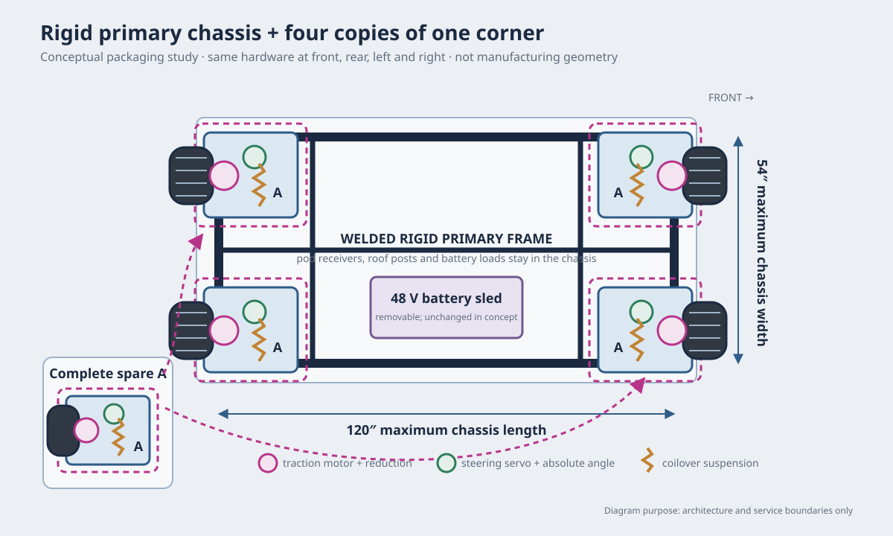
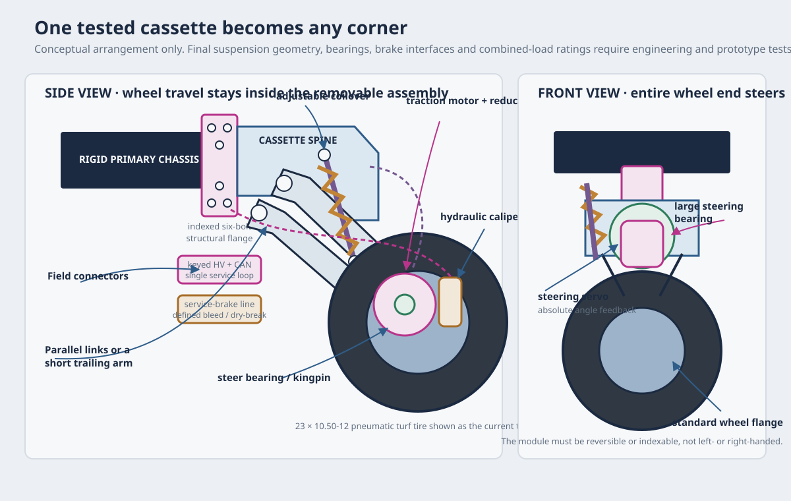
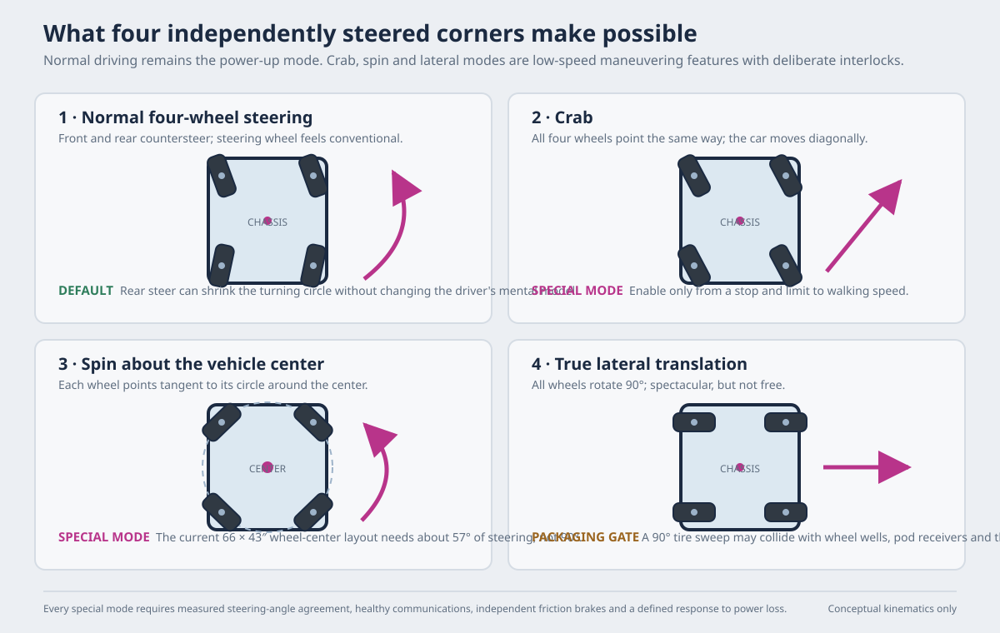

Alternative under study · drivetrain architecture · 13 September 2026
Four identical drive-steer-coilover corners
A rigid 54 × 120″ primary chassis carries four copies of one field-replaceable cassette. Each cassette contains the suspension, pneumatic tire, traction motor and reduction, active steering, angle feedback and friction brake. The same physical spare can replace front, rear, left or right; the harness and controller tell it which corner it has become.

Why consider it
The plan of record already calls each corner removable, but the front and rear assemblies are not the same: the front has a knuckle, kingpin, steering arm and tie rod, while the rear has a different carrier and parking-brake connection. A single spare therefore cannot be a complete drop-in replacement everywhere. Active steering at all four corners can make the mechanical cassette common; a square or indexable mounting flange and common connectors make its location an electrical identity rather than a fabrication difference.
The second attraction is simplification of the suspension system. A coilover at each corner removes the compressor, tank, four valves, pressure sensors, height sensors and air lines. That trades away the present car's ~5.6″ kneel and automatic levelling. The choice is therefore not “air is necessary” versus “air is unnecessary”; it is whether adjustable ride height is worth the extra system when large pneumatic tires and 3–4″ of independent travel can handle the expected low-speed 1–2″ surface irregularities.
What changes — and what stays
Kept from the current car
- 54 × 120″ transport envelope and a rigid welded primary frame.
- Low, removable 48 V battery sled and one traction controller per wheel.
- The current 12 × 8.5 rim / 23 × 10.50-12 turf-tire target, if a vendor can supply a properly rated hub flange and bearing package.
- Hydraulic service brakes on all four wheels and a mechanically held parking brake on at least two.
- The six demountable passenger pods, roof, load cases and 5 mph playa operating limit.
Changed by this option
- A geared industrial traction unit replaces each direct-drive hub.
- Every wheel steers electrically; the rack, column, tie rods and front-only knuckles disappear.
- A coilover and locating links replace the air spring, separate damper, compressor, tank, valves, pressure sensors, height sensors and air lines.
- The frame receives four identical cassette interfaces rather than different front and rear arms.
- Steering becomes a safety-critical distributed control system, not a mechanical linkage.
Preliminary design envelope
These are screening numbers for an RFQ and a one-corner prototype, not final component ratings.
| Item | Preliminary target | Why |
|---|---|---|
| Vehicle basis | ≈2,740 lb empty; ≈5,140 lb with 12 seated | Same mass model as the plan of record. |
| Worst static corner in the current model | ≈1,830 lb / 830 kg in the rear-crowded load case | This is higher than the evenly divided 1,285 lb corner load and must govern the first screen. |
| Vendor load screen | Do not pursue a unit below ≈1,250 kg / 2,750 lb quoted vertical capacity; a 2,000 kg class unit is preferable while impact duty is unknown | 1.5 × the modelled 1,830 lb static corner is 2,745 lb. This is a prototype proof-load starting point, not a substitute for combined-load engineering. |
| Traction | 2–3 kW per corner, 48 V, geared for 5 mph continuous operation and a controlled 10 mph capability | Matches the existing bus and leaves torque reserve for soft patches, starting and the trailer ramp. The vendor still has to supply continuous low-speed thermal data. |
| Steering | At least ±60° for normal, crab and spin; ±90° only if lateral travel is worth a new frame layout | At the current 66 × 43″ wheel centres a spin tangent is about 57°. True sideways motion needs 90° and substantially more tire-sweep clearance. |
| Suspension | 3–4″ wheel travel; coilover with adjustable preload and likely a progressive or dual-rate spring | The sprung mass varies enormously between empty and occupied. A single fixed linear spring may be unacceptable at one end of the range. |
| Wheel end | Standard replaceable 12″ wheel flange for the 23 × 10.50-12 turf tire; rated bearings, brake interface and dust seals | The small polyurethane or solid-rubber wheel supplied on a warehouse AGV unit is not suitable merely because the gearbox is. |
| Complete cassette mass | Preferably ≤200 lb including tire, suspension, brake, motors and steering electronics | The current four corners total ≈485 lb. Four 180–220 lb cassettes would add roughly 235–395 lb before the spare and directly worsen the ramp and tow budgets. |
| Field interface | One six-bolt structural flange, one keyed high-voltage connector, one keyed low-voltage/CAN connector and one defined service-brake interface | The module is only a useful spare if it can be exchanged with ordinary hand tools and a rated jack. |
A complete corner, not just an AGV wheel

- Identical means reversible, not merely similar. The chassis flange should be square or otherwise indexable, and the brake, connectors and load path must work when the same cassette is rotated into any corner. A left- and right-handed pair defeats the one-spare goal. design requirement
- The suspension stays on the cassette. Leaving the coilover or locating arm on the car would make a swap slower and corner-specific. The cassette therefore includes its pivots, links, bump stop and droop limit as well as the drive-steer unit. direction
- Corner identity is electrical. A keyed harness, resistor ID or commissioning step tells the local node whether it is front-left, front-right, rear-left or rear-right and assigns steering sign, zero, speed command and brake diagnostics. implementation open
- The brake remains independently useful. A motor holding brake may help park an AGV, but it does not replace the car's hydraulic service brake or the mechanically held parking brake. The swap procedure must include a defined way to open, cap, bleed and verify the hydraulic circuit. same brake requirement
Steering modes — and the packaging limit

Normal steering should be the power-up mode and should feel conventional at the steering wheel. Rear countersteer can reduce the turning circle without changing the driver's mental model. Crab and spin should require the vehicle to be stopped, a deliberate mode enable and a walking-speed limit. A steering-angle mismatch, lost communications or implausible sensor signal should remove traction torque and command independent friction braking.
Spin is plausible without full lateral travel. At the current 66 × 43″ wheel centres, each wheel needs to sit tangent to the circle around the vehicle center, about 57° from straight ahead. A ±60° mechanical target can therefore support a center spin. True lateral motion needs ±90° and likely conflicts with the 54″ transport envelope, the wheel wells and the side-pod receiver sleeves; it should not be promised unless a full sweep model says it fits.
What the market proves — and what it does not
Industrial drive-steer units demonstrate that integrated traction, reduction, active steering, braking and absolute angle feedback are purchasable. Their catalog ratings are for AGV duty and usually small hard wheels on prepared floors; none of the figures below establishes an outdoor passenger-vehicle wheel end.
| Reference product | Published configuration | Use in this study |
|---|---|---|
| JY Robot HW220, single-sided | 2.5 kW / 48 V traction; 0.4 kW steering; 40:1 planetary; ±110°; 2,000 kg listed load; 65 kg net; 220 × 80 mm wheel | The closest catalog starting point by power, voltage, steering range and mass. Its supplied wheel is far too small; ask for a standard pneumatic-wheel hub and the resulting radial, axial, overturning and impact ratings. |
| JY Robot HW400, double-sided | 4 kW / 48 V traction; 1 kW steering; 40:1; ±110°; 4,000 kg listed load; 120 kg net; 400 × 120 mm wheel | Confirms a heavier supported-wheel architecture, but 265 lb before suspension, vehicle brake and a pneumatic tire makes it a poor fit for the tow budget. |
| ZHLUN ZL-N730 outdoor pneumatic unit | 1.5 kW / 48 V traction; 0.75 kW steering; 580 mm pneumatic tire; 500 kg listed load; 730 mm installation height | Important precedent: a manufacturer already integrates active steering and reduction with a roughly 23″ pneumatic outdoor tire. Its listed load is much too low for this car. |
| ZHLUN ZL-N1050 outdoor pneumatic unit | 2.5 kW / 48 V traction; 0.75 kW steering; 805 mm pneumatic tire; 800 kg listed load; 1,050 mm installation height | Closer in power and load, but its 31.7″ wheel and 41″ installation height are too large, and 800 kg is still below the current 830 kg worst static corner. |
Cost and weight consequence
| Plan of record | Identical modular option | |
|---|---|---|
| Four-corner hardware allowance | ≈$4,000–6,500 for motors, controllers, air and brakes, before rims, tires and machining | Internal planning allowance ≈$12,000–20,000 for four completed cassettes, before central safety controls and development |
| Complete spare | Front and rear designs differ; one spare cannot replace every complete corner | Planning allowance ≈$3,000–5,000 for one complete fifth cassette, if the manufacturer and suspension design are genuinely common |
| Four-corner mass | ≈485 lb in the current model | Likely ≈720–880 lb at 180–220 lb complete per cassette; the 65 kg HW220 is already 143 lb without the larger tire, suspension or vehicle brake |
| Air system | Compressor, tank, four valves, height/pressure sensing and lines; enables kneel and levelling | None; coilovers are simpler but give up kneel and automatic levelling |
| Steering | Mechanical front rack; modest software burden and a physical path from wheel to tires | Four servos, absolute angle sensing, local nodes, mode logic and an independent fault supervisor |
| Fabrication | Different front/rear arms and front knuckles; significant machining | One repeated cassette and one jig, but a more demanding structural flange and much more controls integration |
The cost numbers are budgeting allowances, not vendor quotes. The likely mass penalty is at least as important as the price: the current trailer-and-car estimate is already approximately at the used RV's 5,000 lb tow target before cargo. This option has to earn back weight elsewhere or move more modules into the RV.
RFQ brief
A useful first vendor request should include the actual application rather than asking only for a “2,000 kg steering wheel.”
Vehicle: low-speed outdoor passenger platform; ≈2,740 lb empty, ≈5,140 lb normally loaded; current worst modelled static corner ≈1,830 lb.
Surface: hard-packed dry lakebed, loose dust, ruts and occasional 1–2″ irregularities; possible wet patches; ambient heat and pervasive alkaline dust.
Wheel: replaceable 23 × 10.50-12 pneumatic turf tire on a standard 12 × 8.5 rim, or a vendor-proposed equivalent with published load capacity.
Electrical: 48 V traction and steering; ≈2.5 kW traction per corner; absolute steering feedback; CAN interface preferred.
Steering: continuous commanded range of at least ±60°; hard limits and a defined power-off state; ask for ±90° only if the envelope can support lateral travel.
Braking: interface for a hydraulic service rotor/caliper and a mechanically held parking brake; do not count regen or a servo holding brake as the whole brake system.
Data required before purchase: CAD and dimensioned drawing, mass and rotating envelope, radial/axial/overturning and impact ratings at the proposed wheel offset, traction and thermal curves at the proposed tire radius, ingress/dust rating, brake torque, steering backlash and duty, encoder protocol, bearing-life assumptions and lead time.
Safety architecture
- Independent supervisory layer. A separate safety process watches commanded and measured angle, steering-node health, wheel speed, brake state, throttle plausibility and mode state. It can remove traction enable independently of the motion controller.
- Angle plausibility. Use an absolute encoder plus an independent limit/reference channel or another monitored angle signal; do not let one silent encoder error steer a loaded passenger vehicle.
- Defined fault response. On angle disagreement, lost CAN, steering over-current or a node reset: ramp traction torque to zero as quickly as stability permits, apply the friction service brake and latch the fault. Recovery is manual.
- Power-off steering state. Specify whether the steering axis is mechanically braked, self-locking or freely back-drivable. “Whatever the servo does when power disappears” is not a design.
- Mode interlocks. Normal mode on startup. Crab/spin only from a stop and only below a fixed low speed. True lateral remains disabled unless the mechanical sweep, visibility and inspection plan are all resolved.
- Conventional inspection behavior. The default controls should present as a steering wheel, throttle, service brake, F/N/R and held parking brake. Special modes are an additional maneuvering feature, not the only way to drive.
Gate before this can replace the current drivetrain
- Get two application-reviewed proposals. Each must include a dimensioned assembly for the pneumatic wheel end, environmental limits, combined-load assumptions, brake interface, controls and a firm mass/price — not only an AGV catalog page.
- Model the full sweep. Put the exact vendor CAD into the 54 × 120″ chassis with the current 28″ pod-receiver spacing, wheel wells and 23″ tires. Check normal lock, ≈57° spin position, full bump/droop and service access. Treat 90° lateral as a separate optional layout.
- Build one complete cassette and fixture. Include its real flange, suspension, brake, harness and controller. Weigh it before any frame change.
- Proof-load the assembly. A preliminary vertical fixture target is 1.5 × the current 1,830 lb static corner, or ≈2,745 lb, while cycling suspension and steering. A qualified mechanical engineer must set the final proof factor and combined side, braking, drive and impact cases.
- Run the duty test. Reproduce the 5 mph low-speed/high-torque duty, repeated steering at rated corner load, braking with a full battery, dust exposure and thermal soak. Verify fault shutdown by disconnecting each sensor and communications link in turn.
- Re-run transport and energy. Put the measured cassette mass, geared-drive efficiency and steering draw into the frame and range models. This option advances only if the tow/ramp plan still works.
Open questions
- Can a manufacturer supply a 23″ pneumatic flange and outdoor wheel-end rating without turning the module into a 250 lb custom part?
- Can one coilover tune cover the empty-to-full load range, or does the cassette need a dual-rate spring, tender spring or mechanically adjustable preload?
- Is losing the 5.6″ air-suspension kneel acceptable for boarding, trailer loading and levelling, or does the body need a different stair strategy?
- Does a truly reversible cassette fit around the pod receivers and brake plumbing, or do packaging compromises reintroduce left/right parts?
- Are crab and spin worth the steer-by-wire safety burden if normal four-wheel steering is the only mode used most of the time?
- Can the brake connection be made field-serviceable without turning a corner swap into a long bleed and inspection procedure?